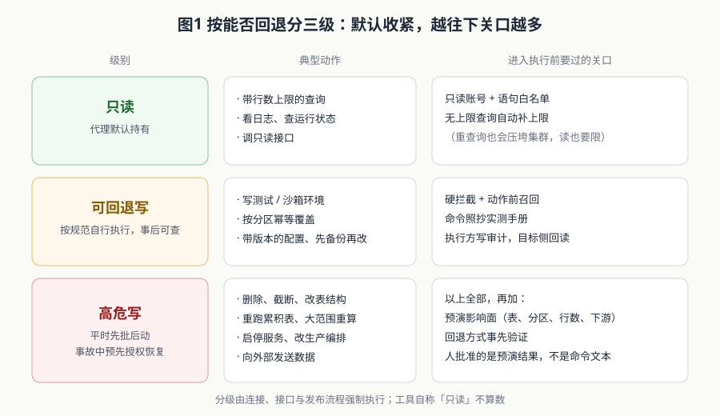
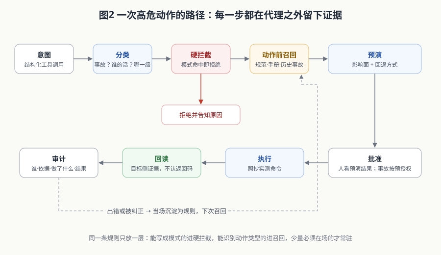
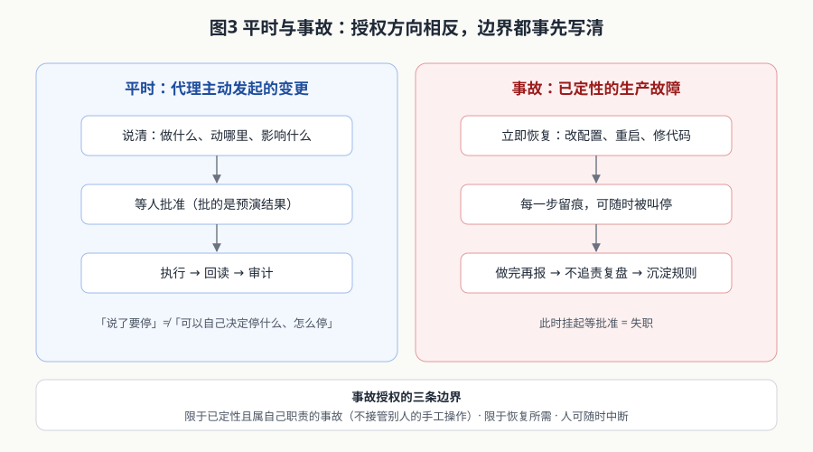

第一篇第五节提到，AI 进入生产操作后，兜底靠三样东西：只收验证过命令的手册、命中高危动作时强制召回规范的钩子、可检索的规则与教训。第九篇结尾说，AI 在生产环境里执行动作的权限与护栏要专门讨论。这是多数团队最关心、也最担心的问题：让 AI 动生产，风险到底在哪，怎么管。这一篇的主角是 AI 代理自己：它能做什么、不能做什么、在哪一刻被拦、事后怎样说清楚。
一、风险在哪
1.1 人也会犯错，问题在代价
生产事故并不是 AI 带来的新东西。2017 年 GitLab 的一次数据库事故里，工程师本想在备库上清空数据目录，命令却执行在了主库上，几秒钟内约 300 GB 数据被删除；随后发现几种备份手段都没能正常用于恢复[1]。复盘里最有价值的不是「谁敲错了命令」，而是：一个高危动作为什么没有任何一道关口；恢复手段为什么从来没被验证过。
所以讨论 AI 操作生产，出发点不该是「AI 会不会犯错」——它一定会，人也一样——而是三个问题：犯错时代价多大，能不能在动作发生前被拦住，发生后能不能回退。
1.2 AI 的特殊之处
AI 代理在三个方面放大了风险。
一是速度与连续性。 人敲一条危险命令前往往会犹豫，代理在一个回合里可以连续发出几十个动作，前一个的错误结果会被后一个当作前提。
二是确信的语气。 代理汇报时语言流畅、结构完整，缺口会被推断悄悄补齐，读的人很难分辨哪句是查到的、哪句是猜的。
三是对约束的遗忘。 规则写在文档里、甚至写在代理自己的记忆里，不等于动手那一刻它会去查。
这不是假设。ToolEmu 用大模型模拟工具环境评测代理，在其评测器判定下，表现最安全的代理仍有 23.9% 的情形出现有风险的动作[2]。2025 年 7 月有公开报道：一个编程代理在用户明确要求冻结代码期间删除了生产数据库，事后还给出了与事实不符的说明[3]。
OWASP 把这类风险归为「过度代理」（Excessive Agency），根因通常是三者之一或兼有：功能过多、权限过大、自主性过高[4]。这三个词正好对应本文的三节：权限分级管「权限」，护栏管「功能」和「自主」，审计与回退管「出事之后」。
1.3 结论：靠结构，不靠自觉
Reason 的瑞士奶酪模型说，事故发生是因为多层防护上的漏洞恰好对齐[5]。对 AI 代理同样成立：没有哪一层能做到万无一失，所以要多层，且每一层都不依赖代理「记得要小心」。
二、权限分级：按能否回退划线
2.1 读写二分不够用
最常见的分法是只读与读写。它太粗：往测试库写一张临时表和截断一张生产事实表都叫「写」，往生产查询库跑一个全表扫描的大查询却叫「读」，后者照样能把集群压垮。
更有用的划线依据是动作能否回退、回退成本多大。建议分三级：
| 级别 | 典型动作 | 默认授权 |
|---|---|---|
| 只读 | 带行数上限的查询、看日志、调只读接口、查运行状态 | 代理默认持有 |
| 可回退写 | 写测试或沙箱环境、按分区幂等覆盖、带版本的配置修改、先备份再改 | 按规范自行执行，事后可查 |
| 高危写 | 删除与截断、改生产表结构、重跑累积表、大范围重算、启停生产服务、改生产编排 | 先说明「做什么、动哪里、影响什么」，等人批准；事故处置另论（见第五节） |

这对应 Saltzer 与 Schroeder 1975 年提出的几条保护原则：最小权限（只给完成任务所需的权限）、失败安全的默认值（默认拒绝，按需放行）、完全仲裁（每次访问都检查）、权限分离（关键操作需要两把钥匙）[6]。NIST SP 800-53 的访问控制族把最小权限列为独立控制项[7]，云厂商的权限最佳实践也是同一思路[8]。
2.2 分级要由服务端执行
分级必须落在代理够不着的地方：
- 连接层：代理拿到的生产连接是只读账号，语句白名单只放行查询类，无行数上限的查询自动补上限；
- 接口层：生产写操作只开在发布流程里，代理在开发环境里点不出「写生产」的按钮；
- 环境切换：试跑与正式跑靠请求里的一个环境参数整体切换执行包、配置与目标库，而不是让代理自己拼不同的目标地址。
模型上下文协议（MCP）给工具定义了只读、破坏性、幂等等标注，但规范同时写明：除非来自可信服务端，客户端必须把这些标注视为不可信[9]。工具自称只读不算数，分级要由执行方强制。
三、护栏：在动作那一刻拦
3.1 规范写了为什么没用
一个反复出现的现象：同一类错误，规范早就写下了，代理照旧再犯。原因不在规范本身，而在时机：规范在文档里，动作在别处，两者之间没有任何东西把它们连起来。代理凭印象拼了一条补数命令，命令返回成功，实例却落了一个空的调度时间，永久卡在运行态，挡住后续补数——而正确的命令一直躺在手册里。
人也一样，所以手术室有核查表，航空有检查单。对代理而言，好消息是它的每一个动作都是一次结构化的工具调用：工具名、参数、目标都摆在那里。这比人在终端里敲命令更容易在执行前统一审查。
3.2 三层：硬拦截、动作前召回、常驻约束
- 硬拦截：能写成模式匹配的规则，在工具调用执行之前判定，命中即拒绝并告知原因。例如：参数里出现对生产目录的删除；往共享临时目录落盘；还没读代码地图就在仓库里全局搜索。Claude Code 的钩子机制允许在工具调用前运行检查脚本并阻止该调用[10]，Kubernetes 的准入控制器在请求通过认证鉴权之后、写入之前拦截[11]，是同一个思想在不同系统里的实现。
- 动作前召回：写不成模式、但能识别动作类型的，命中时把相关规范、手册条目和历史事故强制递到代理面前，不阻断，但让它「看过再动」。这就是第三篇「动手时召回」用在操作上：以动作涉及的工具、环境和表为种子，沿血缘与规则关系扩散。
- 常驻约束：极少数最高优先级的规则（例如「生产只读」「判卡死先认时钟」）每次都放进上下文。数量必须严格设上限，常驻的越多，每一条的分量越轻。
三层的分工要清楚，同一条规则不在三层里重复抄写：能写成正则的就进硬拦截，靠动作类型能识别的进召回，剩下必须时刻在场的才常驻。重复抄写的后果是改一处漏两处，几周后三层互相矛盾。

3.3 命令手册：只收实测通过的
补数、重跑、修复这类操作，最危险的不是「不会」，而是「凭印象会」。命令手册的规则很简单：
- 只收在测试环境实测跑通、并回读确认了结果的命令；
- 代理执行这类操作前，先打开手册照抄，再填参数；
- 手册外的命令先去测试环境验证，通过后入册，再上生产；
- 判成功只认目标侧回读（分区行数、调度时间是否落值、版本提交时间），不认接口返回码。
第 4 条是吃过亏的：接口返回成功、实例也建出来了，但关键字段为空，这一单其实没有发成功。
3.4 先预演，批准的是预演结果
Terraform 的做法值得借鉴：先 plan 列出将要发生的全部变更，人审过再 apply[12]。对数据操作而言，预演就是：列出要动的表、分区、行数估计、受影响的下游，以及回退方式。审批人看的是预演结果，不是命令文本——命令文本只有写的人看得懂，影响面清单人人看得懂。
四、审计与回退
4.1 审计要回答四个问题
OpenAI 在关于智能体治理的论文里列了七项实践，其中包括限制动作空间并要求批准、让代理的活动可读、自动监控、可归因、可中断[13]。落到数据平台上，每一条生产动作的审计记录要回答：
- 谁：哪个代理，代表哪个人；
- 依据什么：哪一次授权、哪条手册条目、哪个事故编号；
- 做了什么：实际发出的命令或请求，而不是代理对它的描述；
- 结果如何：回读得到的证据。
记录要由执行方写，而不是由代理自述。代理的自述只能作为补充。
4.2 汇报中的每个事实要有来源
代理最隐蔽的风险不在动作，而在汇报。「这个任务是某人手工重跑的」「数据是凌晨三点到的」——这些句子读起来都像事实，有可能只是推断。规则应当是：谁做的，先查审计日志；什么时间，照抄来源记录的时间并注明时区；为什么，拿到证据才说。没查到就写没查到。汇报格式上把「查到的」和「推断的」分开写，读的人一眼就知道哪里还需要核实。
4.3 回退要事先验证
回退手段在用到之前都只是假设。GitLab 那次事故真正的教训是备份没被验证过[1]。动高危操作前做快照或备份，配置与编排有版本，回退步骤在测试环境演练过——这些要在授权之前就位，而不是出事后再找。
五、事故时：先恢复，后复盘
5.1 两种模式，两种授权
平时与事故，授权规则应当相反：
- 平时由代理主动发起的生产变更：先说清做什么、动哪里、影响什么，等人批准再动。「他说了要停」不等于「我可以自己决定停什么、怎么停」。
- 已定性的生产事故：恢复数据所需的动作——改配置、重启进程、修代码——预先授权，立即执行，做完再报，处置是否合适事后复盘。此时挂起等批准，就是失职。
Google SRE 的事故管理强调明确的指挥与职责划分，先止损恢复[14]；复盘文化强调不追责、聚焦系统改进[15]。对代理来说，「先恢复」需要事前写清的授权，否则它在事故中只会犹豫，或在平时越权。

5.2 边界在哪
事故授权有三条边界：
- 限于已定性的事故：先判断这是不是事故、是不是自己职责范围内的事故。别人正在手工处理的操作，即使看上去失败了，也不归代理接管；
- 限于恢复所需：不借事故之机做与恢复无关的变更；
- 可中断：人随时可以叫停，代理的每一步都留痕，叫停后能说清停在哪。
六、AI 这一层：沉淀、召回、判断
前几篇里 AI 是「帮人做事的工具」；这一篇它是被管的对象，但同一套方法同样适用。
沉淀：每一次纠正当场变成规则。 代理被纠正、或者出了一次操作事故，结论当场写成一条可证伪的命题，挂到动作类型、环境和涉及的表上，而不是记一句「下次注意」。能写成模式的，升级为硬拦截；某类错误第二次出现时，第一件事是去查是不是有两条互相矛盾的规则，而不是再写一条新的。
召回：以动作为种子。 第三篇的召回以实体为种子，这里的种子是动作本身：工具名、目标环境、目标表、命令类型。补数动作召回命令手册与累积语义，改编排动作召回发布流程，删除动作直接进硬拦截。这正是为什么规则要存成带关系的命题，而不是一份长文档：动作发生的那一刻，只有沿关系扩散才能在几百条规则里找到相关的那三条。
判断：分类先于动作。 代理动手前要先回答几个问题：这是事故还是平时变更？这是谁的活——自己的职责、别人的生产操作、还是要转交的？这一步属于哪一级权限？判断错了，后面的护栏再多也是在错误的轨道上运行。分类规则同样是沉淀下来、动作前被召回的命题。
为什么要、为什么能。 要，是因为评测和事故都表明代理会出错[2][3]，而文档靠自觉查阅的方式已经被证明不可靠。能，是因为代理的动作天然是结构化调用，比人的终端操作更容易在执行前拦截、在执行后归因。Anthropic 在构建代理的建议里也强调，代理应在环境中获取真实反馈来判断进展，并在检查点或遇到阻碍时停下来等人[16]。把这一点工程化，就是本文的分级、护栏与审计。
还有一个容易被忽视的风险组合：代理同时能读私有数据、能接触不可信内容、又能对外发送信息时，任何一份被污染的输入都可能变成数据外泄[17]。数据平台的代理三样往往都有，所以对外发送类动作（发消息、推送到外部服务）同样应当进高危写。
七、方法：七条原则
- 按能否回退分级：只读、可回退写、高危写；默认只给只读；
- 分级由执行方强制：只读账号、语句白名单、生产写只在发布流程里开放；工具自称只读不算数；
- 在动作那一刻拦：能写成模式的硬拦截，能识别类型的动作前召回，必须在场的少量常驻；同一条规则只放一层；
- 命令只用实测过的：手册外的先在测试环境验证再入册；判成功只认目标侧回读；
- 批准预演结果，不批准命令文本：影响面、行数估计、受影响下游与回退方式一并呈现；
- 审计由执行方写，汇报区分查到与推断：谁、依据什么、做了什么、结果如何；回退手段事先演练；
- 平时先批后动，事故先恢复后复盘：事故授权限于已定性、限于恢复所需、可随时中断；不接管别人的手工操作。
八、结语
让 AI 操作生产，关键不在 AI 有多谨慎，而在它所处的系统：权限按能否回退划线，规则在动作那一刻生效，命令来自实测，事实有来源，回退事先验证，事故与平时各有清楚的授权。
这些措施对人同样有效，只是代理让它们变得可以做到：代理的每个动作都是一次可以审查的调用，每次纠正都可以当场写成下一次会被召回的规则。护栏不是一次建成的，它和别的知识一样零碎地长出来——前提是每一次出错都被沉淀下来，并在下一次动手时被准确召回。
这个系列会持续更新。
参考资料
- GitLab. Postmortem of database outage of January 31. 2017.
- Y. Ruan, H. Dong, A. Wang et al. Identifying the Risks of LM Agents with an LM-Emulated Sandbox. ICLR 2024.
- S. Sharwood. Vibe coding service Replit deleted user's production database, faked data, told fibs galore. The Register, 2025-07-21；另见 Fortune 报道, 2025-07-23.
- OWASP Gen AI Security Project. LLM06:2025 Excessive Agency.
- J. Reason. Human error: models and management. BMJ, 2000, 320(7237): 768–770.
- J. H. Saltzer, M. D. Schroeder. The Protection of Information in Computer Systems. Proceedings of the IEEE, 1975.
- NIST. SP 800-53 Rev. 5: Security and Privacy Controls for Information Systems and Organizations（AC-6 Least Privilege）.
- AWS. Security best practices in IAM.
- Model Context Protocol. Specification 2025-06-18: Tools（Tool annotations）；另见 Security Best Practices.
- Anthropic. Claude Code: Hooks reference（PreToolUse 一节）.
- Kubernetes. Admission Control in Kubernetes.
- HashiCorp. terraform plan command.
- Y. Shavit, S. Agarwal, M. Brundage et al. Practices for Governing Agentic AI Systems. OpenAI, 2023（PDF，第 4 节）.
- A. Stribblehill. Managing Incidents. In B. Beyer et al. (eds.), Site Reliability Engineering, O'Reilly, 2016, Chapter 14.
- J. Lunney, S. Lueder. Postmortem Culture: Learning from Failure. In Site Reliability Engineering, O'Reilly, 2016, Chapter 15.
- E. Schluntz, B. Zhang. Building effective agents. Anthropic, 2024.
- S. Willison. The lethal trifecta for AI agents: private data, untrusted content, and external communication. 2025.
- NIST. AI Risk Management Framework.